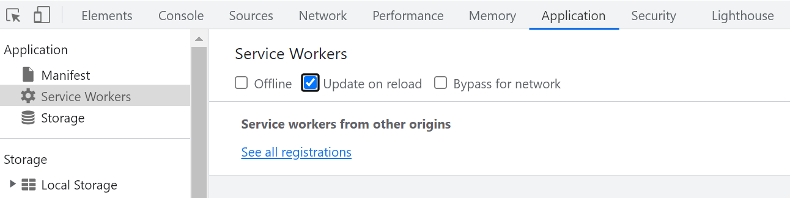

Sites that require logins normally don't embed properly in Comingle frames. Unfortunately, this includes useful sites like... the Hunt site, Slack, Google Sheets, basically all the things we want to embed. This extension makes it possible. If you want even more gory details, ask me how!
We strongly recommend using Chrome. Firefox is semi-supported, but won't embed Slack at all, and has nuanced cookie settings. Other browsers are not supported.
Your browser must allow Comingle to set third party cookies. You can either do this by enabling third-party cookies globally, or - in Chrome - by adding an site-specific exception. In Firefox, we have to use the "Custom" privacy tier, blocking either no cookies, or only "Cross-site tracking cookies" (also shown below). I wasn't able to figure out a site-specific exception route.
Chrome
Firefox
(installing a custom extension - steps 2-5 - is also demonstrated in this YouTube video)Installation on Chrome:
Easier to set up, because there is an app in the appstore, but Firefox prevents us loading Slack in a frame even with the extension in place. If using Firefox, you will have to use Slack outside the Comingle environment.Installation on Firefox:
The extension does weaken browser security to some extent. For the duration of Hunt, the risk is very low, but there's no reason to leave the extension on all year round.
In some browsers, Slack uses a “service worker” to fetch pages, which bypasses the extension’s ability to mess with the page headers (at the moment). You can disable/evade this feature by opening the development console (F12, or go Menu -> More tools -> Developer tools), going to the Application tab”, choosing the “Service Workers” option in the sidebar, and checking the “Update on reload” and “Bypass for network” checkboxes. Then refresh Comingle.
Screenshot

If you are logging into Slack using Google (and Apple?) as auth provider (i.e. not by email), you may find you can't log in. You should try going to the correct Slack url (https://app.slack.com/client/<server_id>/<channel_id>) in a new tab and following your normal login flow. This should set the correct cookies, and then on refresh of Comingle, it will suddenly work. Hopefully.
Try in Chrome!
Ask the tech team for help in #notaplanet-help (but we make no promises about fixing anything complicated during Hunt!)